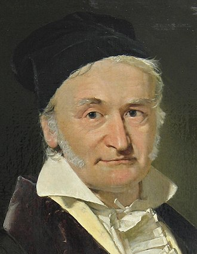

|  | Johann Carl Friedrich Gauss (30 April 1777 – 23 February 1855) was a German mathematician and physicist who made significant contributions to many fields in mathematics and science. Sometimes referred to as the Princeps mathematicorum and "the greatest mathematician since antiquity", Gauss had an exceptional influence in many fields of mathematics and science, and he is ranked among history's most influential mathematicians. |
In his 1799 doctorate in absentia, A new proof of the theorem that every integral rational algebraic function of one variable can be resolved into real factors of the first or second degree, Gauss proved the fundamental theorem of algebra which states that every non-constant single-variable polynomial with complex coefficients has at least one complex root. Mathematicians including Jean le Rond d'Alembert had produced false proofs before him, and Gauss's dissertation contains a critique of d'Alembert's work. Ironically, by today's standard, Gauss's own attempt is not acceptable, owing to the implicit use of the Jordan curve theorem. However, he subsequently produced three other proofs, the last one in 1849 being generally rigorous. His attempts clarified the concept of complex numbers considerably along the way.
| Gauss also made important contributions to number theory with his 1801 book Disquisitiones Arithmeticae (Latin, Arithmetical Investigations), which, among other things, introduced the triple bar symbol ≡ for congruence and used it in a clean presentation of modular arithmetic, contained the first two proofs of the law of quadratic reciprocity, developed the theories of binary and ternary quadratic forms, stated the class number problem for them, and showed that a regular heptadecagon (17-sided polygon) can be constructed with straightedge and compass. It appears that Gauss already knew the class number formula in 1801. | |
In addition, he proved the following conjectured theorems:
He also: